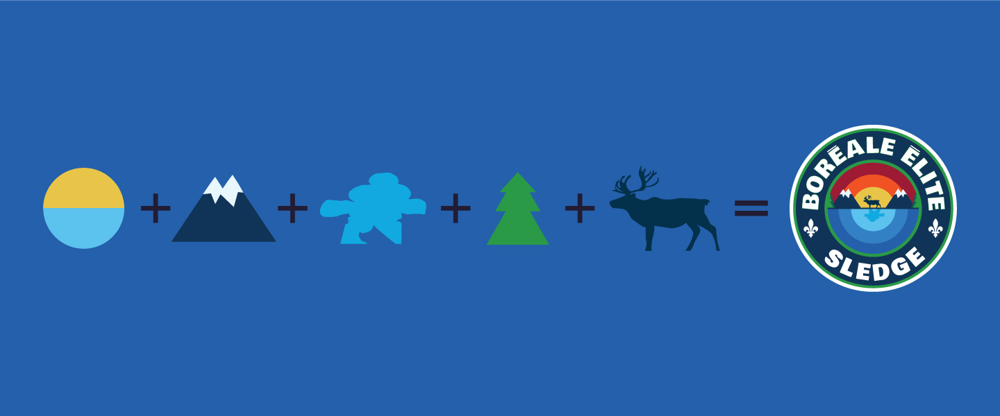
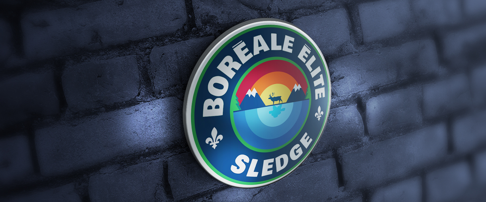
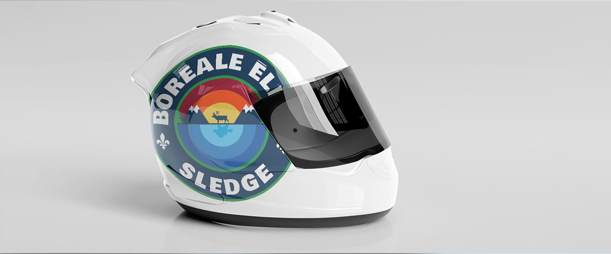
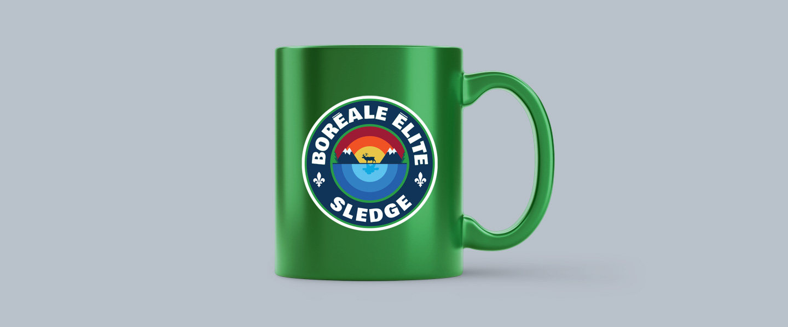
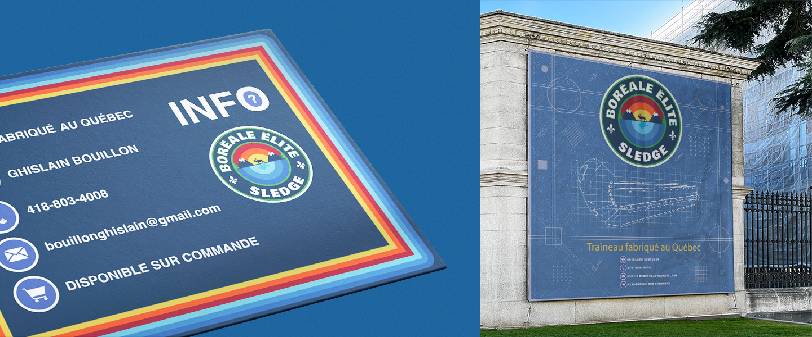
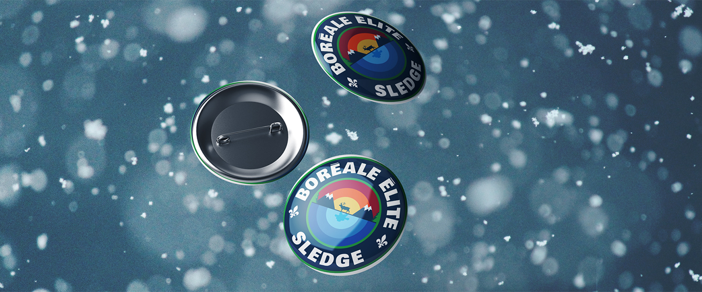
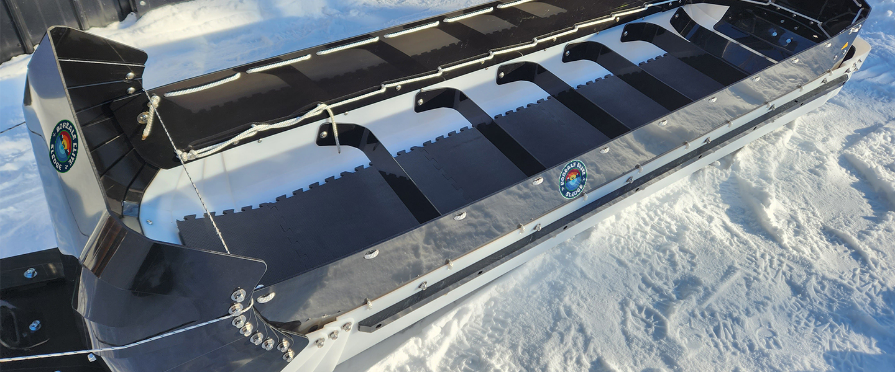

BORÉAL ÉLITE SLEDGE
Branding
Description:
This badge captures a symphony of vibrant colors against winter’s pristine canvas. The logo unveils a towering mountain silhouetted against a warm sunset, a breathtaking scene that exudes grandeur. Layers of ice-blue shades artfully mirror winter’s gradual embrace, deepening as the season unfolds. Trees stand tall, casting serene reflections on frozen waters. The noble caribou’s shadow gracefully graces the scene, a reverent nod to the wild’s spirit. A masterstroke of design, an inuksuk silhouette symbolizes unity and guidance. Amid the snow-kissed landscape, this emblem proudly represents Boreal Elite Sledge, a testament to their unwavering strength within winter’s exquisite embrace.






